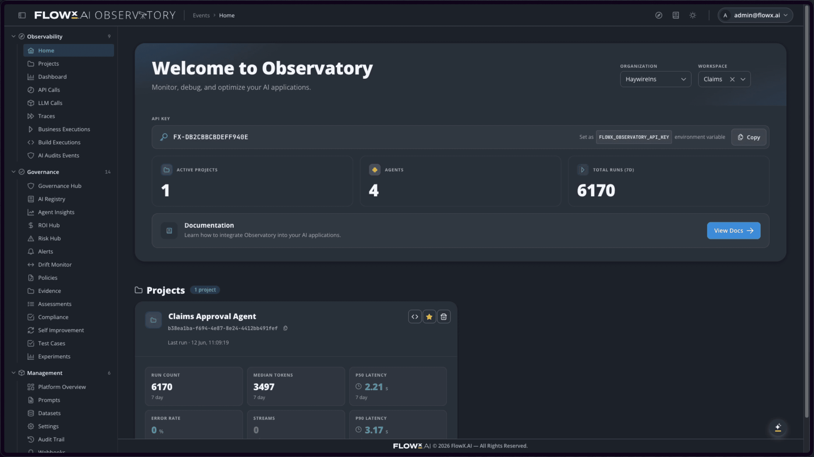
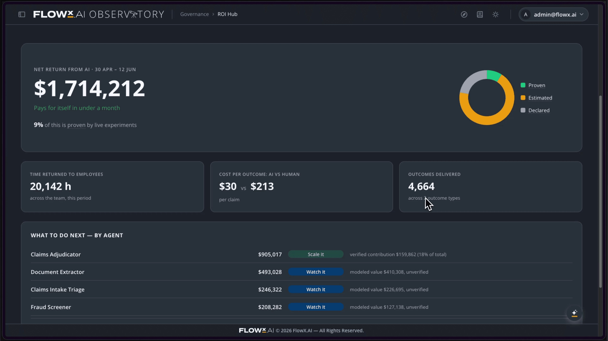

Executive summary
FlowX.AI 6 answers the questions you are likely asking in your agentic AI roadmap:
- How to approach agentic AI with scale in mind,
- How fast to reach production,
- How to satisfy compliance and prove value,
- How to trust outputs, and
- How to keep agents performing as the business and models change.
These questions are hard because scaling agentic AI is not the same as deploying more agents. One agent can be managed as a project. Ten agents need shared controls. A hundred agents need an operating layer.
Once agents move into mission-critical work across countries, channels, regulators, languages, systems, and business lines, the challenge becomes institutional: every decision must be governed, every output must be auditable, every result must be measurable, every hallucination risk must be controlled, and every agent must keep working as conditions change.
That is why production AI needs the controls required for institutional scale:
- Industry-specific agent suites that give teams a proven starting point.
- Governance built into the architecture, so compliance is captured as the work happens.
- Audit-ready evidence for every decision — what the AI did, why, which rule it checked against, and who approved it.
- Live ROI visibility, so Finance can see what agents are saving, eliminating, and delivering.
- Zero hallucinations by design, engineered through cross-validation, calibrated confidence, and drift control.
FlowX.AI 6 is the next step in the evolution from agentic AI in production to institutional AI at scale. FlowX.AI 5 proved the technology foundation — AI Core, Synaptic Agentic Architecture, Process Orchestrator, and AI Agent Builder — supporting one million agent executions in production with zero errors.
FlowX.AI 6 builds on that foundation and turns it into the business layer enterprises need to build, deploy, run, and monitor AI agents for mission-critical work on a single platform.
From FlowX.AI 5 to FlowX.AI 6: what changed
The last wave of enterprise AI was not only about experimentation. For FlowX.AI customers, it was about getting agentic AI into production. FlowX.AI 5 established the technology foundation for that step: (1) AI Core, (2) Synaptic Agentic Architecture, (3) Process Orchestrator, and (4) AI Agent Builder.
The outcome was measurable: 1 million agent executions in production with 0 errors as proof points.
The next question is whether AI can operate as part of the institution itself. This is the industry shift from FlowX.AI 5 to FlowX.AI 6. Agentic AI has entered production, but production alone is not the end state.
One agent can solve a visible workflow problem. Several agents can improve a department. But when agents start operating across geographies, business lines, regulatory frameworks, languages, data, channels, and legacy systems, companies are facing a different challenge: institutional scale.
FlowX.AI 6 is built for that threshold. FlowX.AI is the platform where customers build, deploy, run, and monitor AI agents for mission-critical work: the work that has to be consistent, the work that gets audited, and the work that runs the institution. Our two commitments with FlowX.AI 6 are clear:
- Building production AI for mission-critical applications in weeks, and
- Running production AI at institutional scale across markets, channels, regulators, languages, and systems on a single platform.
The five questions that tackle the scaling challenge
The most important enterprise AI questions we see today on the ground are scale questions. Leaders and their organizations want to know whether AI can move from the first successful deployment to a repeatable operating model without creating new risk, new complexity, or a new transformation burden. One agent can still be managed as a project. Ten agents need common governance, shared data access, orchestration, monitoring, auditability, cost visibility, and reliability controls. A hundred agents need a platform. That is the practical problem FlowX.AI 6 is designed to solve.
Where do we begin?
Most enterprises lack a safe and specific starting point. A blank canvas is useful for experimentation, but not for mission-critical execution. To put that into perspective, a bank does not want a generic document assistant; it wants a reusable, customizable, specific agentic asset that can be deployed across workflows.
An insurer needs claims, onboarding, and underwriting agents that understand insurance workflows. A logistics operator needs AI agents specific to their current pain points: quoting, load entry, exception management, visibility, and plan health — agents that understand operational pressure and margin.
FlowX.AI 6 answers this with Industry-Specific Agent Suites: more than 220 specialized agents, pre-built and pre-tested for banking, insurance, logistics, and manufacturing. The point is not to remove customer-specific configuration, but to avoid starting from zero.
The agent suites give each institution a production starting point, built around workflows, regulations, systems, and edge cases FlowX.AI already understands and has successfully deployed.
How fast can we reach production?
Organizations do not need speed in a sandbox. They need speed in their own systems, with their own data, under their own controls. That is where many AI initiatives slow down. The model may be ready, but the operating environment is not: legacy systems, access rights, compliance gates, approval flows, audit requirements, and system integrations all have to work before AI can touch mission-critical processes.
FlowX.AI 6 compresses that path by combining agent suites with the platform rails required for production:
This is why the promise is not simply "build agents faster" but production AI for mission-critical applications in weeks.
Speed changes adoption. A six-month initiative becomes another transformation program; a governed deployment in weeks creates proof. Proof creates trust, and trust creates the permission and incentive to expand.
Can compliance be built in from the start?
Compliance becomes exponentially harder as agents scale. With one agent, governance can be a checklist. With ten, it becomes a process. With hundreds across departments, geographies, and regulators, governance becomes infrastructure.
The Governance Hub is FlowX.AI 6's answer to that reality. It starts from a simple premise: compliance should be captured as the work happens, not reconstructed later. Every decision is written down as it happens — what the AI did, why it did it, the rule it was checked against, and who approved it.
When a regulator asks for the reasoning behind an AI-influenced decision, the institution should not have to search across logs, emails, spreadsheets, tickets, and manually written reports. The evidence should already exist. An audit cycle that previously took 40 days was reduced to 2 days because the evidence was already captured in the platform.

At scale, this is the difference between reactive compliance and proactive control.
What is this actually worth?
Every AI project should begin with a business case. The difficulty is proving the value after the agent is in production. Teams may feel the improvement, but finance needs more than that. The CFO wants to know what this is worth right now: this quarter, in revenue upside, cost removed, time saved, throughput gained, risk reduced, revenue protected, or leakage prevented.
The ROI Hub makes that value visible from execution data. It gives a live view of every agent, workflow, and process: what it is saving, what work it is eliminating, and what value it is delivering.

AI value is rarely one-dimensional. For example, a mortgage underwriting stack can reduce document preparation time, but it can also reduce rework, shorten time-to-offer, increase throughput of mortgages over time, and strengthen auditability.
At institutional scale, AI cannot be managed as a collection of pilots. It has to be managed as a portfolio of measurable business outcomes.
Can we trust it as the world changes?
The final scale question is trust. In mission-critical work, "mostly right" is not enough. A hallucinated answer in a chatbot is frustrating; a hallucinated answer in lending, claims, compliance, logistics, or advisory workflows creates financial, operational, regulatory, and reputational risk.
FlowX.AI 6 treats Zero Hallucinations by design as an engineering discipline: cross-validation, calibrated confidence, drift control, and continuous evaluation across nine output-quality dimensions. An Agent Evaluation Engine evaluates outputs across nine dimensions: correctness, hallucination, groundedness, tool use, refusal behavior, toxicity, conciseness, helpfulness, and RAG coverage.
But reliability at launch is not enough. Data changes. Business rules change. Regulations change. Customer behavior changes. LLMs change. That is why the next question is even more important: what happens when the world moves on? Welcome to the next stage of institutional AI — agent recursive self-improvement, already available with FlowX.AI 6.
The platform observes agent performance, detects where quality is slipping, generates candidate fixes, tests them, and promotes the winner only when it passes statistical, confidence, governance, and budget thresholds. This is how agents move from static deployments to governed systems that improve over time.
Speed and scale
FlowX.AI 6 is built for enterprises that need speed and scale at the same time.
In FlowX.AI 6 terms, speed means building production AI for mission-critical applications in weeks. Scale means running that AI across geographies, channels, regulators, languages, and systems on a single platform.
FlowX.AI 6 makes production AI scalable as an institutional operating layer. For buyers, the message is practical. You can start where the pain is visible. Deploy where the value can be measured. Build governance into the architecture from the beginning. Prove the economics continuously. Engineer reliability by design. Then expand with confidence.